TENRYU Studio ユーザーマニュアル (1D)
TENRYU 1D 放射流体シミュレーションの入力デッキを、フォーム操作だけで安全に組み立てる GUI。
English version1. 概要とワークフロー
TENRYU Studio は、フォームへの入力から右ペインの Python デッキ (namelist) を常時自動生成し、検証 (validate) を経て保存・実行までを行うための GUI です。単位系は cgs + eV で、長さは cm、時間は s、温度は eV、密度は g/cm3、パワーは W を使用します。
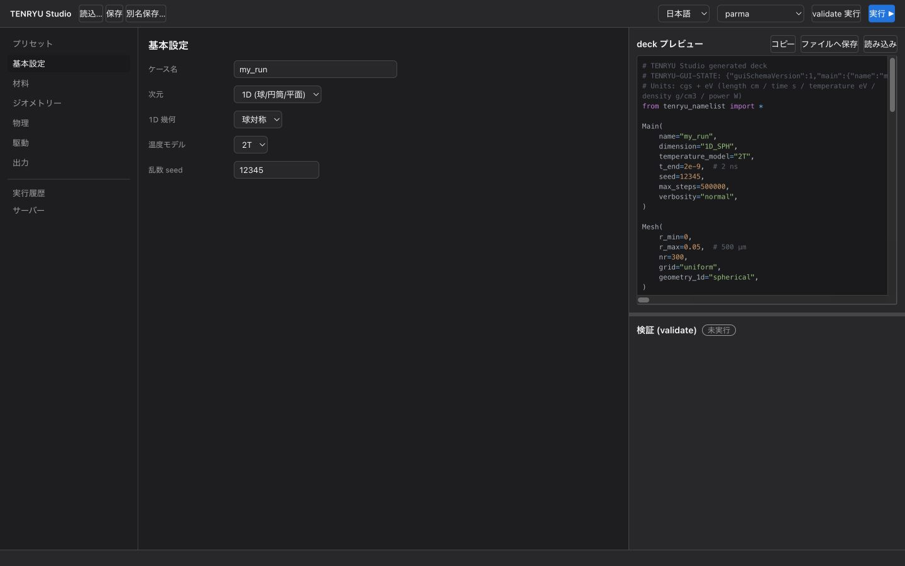
ヘッダーには「読込」「保存」「別名保存」、言語切替、実行サーバー選択、validate 実行、実行▶があります。左ナビには「プリセット」「基本設定」「材料」「ジオメトリー」「物理」「駆動」「出力」「実行履歴」「サーバー」が並び、中央に選択中のフォーム、右側に deck プレビューと検証パネルが表示されます。
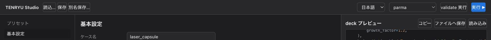
2. クイックスタート (3 分)
-
左ナビの「プリセット」を開き、1D タブを選びます。目的に近いカードの「このプリセットを適用」を押します。
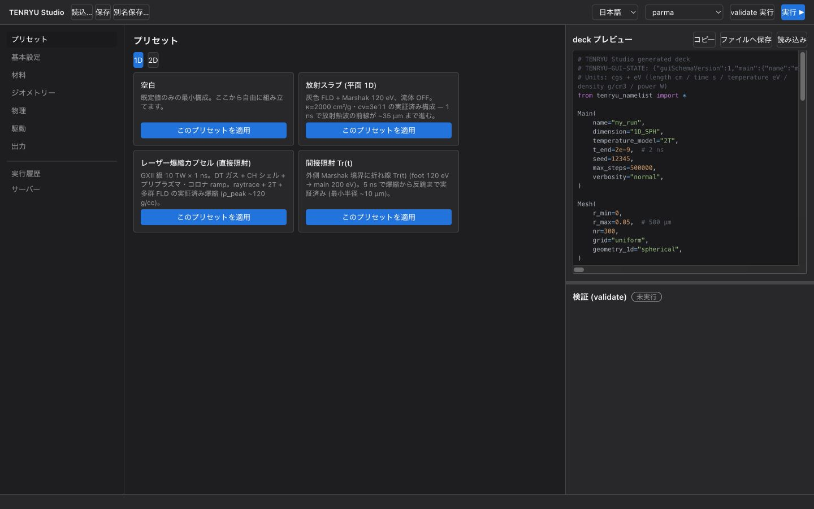
検証済みの 1D プリセットから開始すると、必要な設定一式がフォームに反映されます。 -
右ペインの deck プレビューで生成内容を確認します。
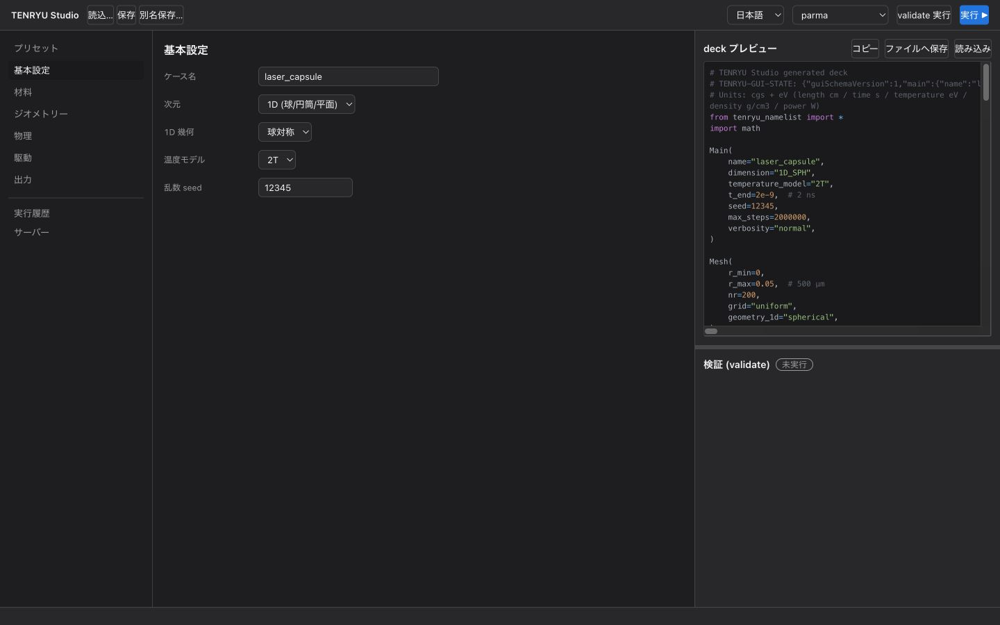
プリセット適用直後のデッキプレビュー。フォーム変更は即座に反映されます。 - 「ファイルへ保存」でデッキを書き出し、
./build/tenryu run <deck>.pyで実行します。実行サーバーを設定済みなら、ヘッダーの実行▶から投入することもできます。
3. 1D プリセット (実 run 検証済み)
Studio には 3 つの物理プリセットと空白プリセットがあります。物理プリセットはいずれも 2026-07-31 に実機 (RTX 4090) で完走し、物理的に成立することを確認した条件です。
| プリセット | 物理 | 実証結果 |
|---|---|---|
| 放射スラブ (平面 1D) | 灰色 FLD + Marshak 120 eV、流体 OFF、κ=2000 cm²/g、cv_e_override=3×1011 erg/(cm³·eV)（電子の体積比熱）、ρ=0.2 g/cm³、L=100 µm、1 ns |
壁は約 104 eV、放射熱波前線は約 35 µm。前方に冷域が残る教科書的プロファイル。 |
| レーザー爆縮カプセル (直接照射) | GXII 級。DT ガス 0.01 g/cc / 230 µm + CH シェル 250 µm + コロナ ramp、351 nm raytrace 10 TW × 1 ns (10 ps ramp)、2T + 20 群 FLD | 吸収は約 86%、bang は約 1.4 ns、ρpeak は約 120 g/cc (per-step 履歴)。RTX 4090 で約 22 秒で完走。 |
| 間接照射 Tr(t) | 外側 Marshak 境界の折れ線 Tr(t): foot 120 eV (0.5 ns) → 1 ns で 200 eV へ ramp → 5 ns 保持。ablator κ=2000 cm²/g | bang は約 4.2–4.5 ns、最小半径は約 10 µm (CR≈30)。停滞・反跳まで捕捉。 |
4. 基本設定
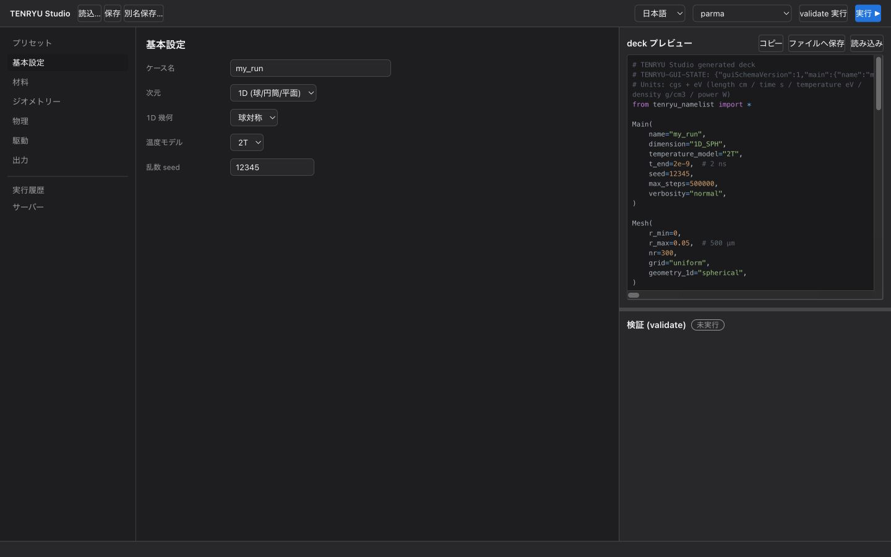
- ケース名: 出力ディレクトリ名
outputs/<name>になります。 - 次元: 本マニュアルでは 1D を使用します。2D RZ モードは本マニュアルの対象外です (別途)。
- 1D 幾何: 球対称、円筒、平面から選びます。
- 温度モデル: 通常は 2T を推奨します。1T は放射スラブのような単純問題向けです。
- 乱数 seed: 確率過程の再現に使う seed です。
- 最大ステップ数: 計算ステップ数の上限です。
- 終了時刻
t_end: シミュレーションの物理終了時刻を s で指定します。
5. 材料
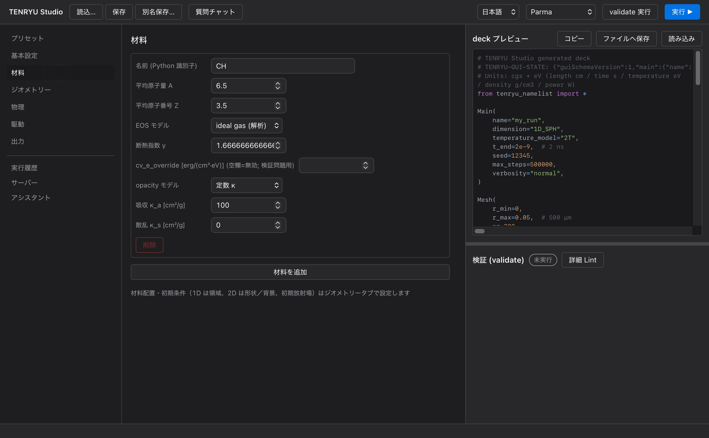
- A/Z: 原子量 A と原子番号 Z を指定します。
- EOS:
ideal_gasでは γ を指定し、必要なら cve を上書きします。TMAT テーブルを使う場合はテーブルファイルを指定します。 - 不透明度:
constantでは κa、κs [cm²/g] を指定します。テーブル不透明度も選択できます。 - 参照状態: 物理タブで
T_start未満のセルの扱いをcold_equilibriumにすると現れます。参照密度 ρ0、参照電子温度 Te0、参照イオン温度 Ti0、参照全圧 P0、体積弾性率 K0 を指定します (eos.cold_reference)。モードを選んだ時点で、その材料の最初の領域の密度と温度が入り (P0 = 0)、「初期状態から設定」で入れ直せます。K0 は材料ごとに入力します (文献値の例: 液体 D2 1.2×109 dyn/cm²、ポリスチレン 5.8×1010 dyn/cm²)。
6. ジオメトリー: 格子と領域
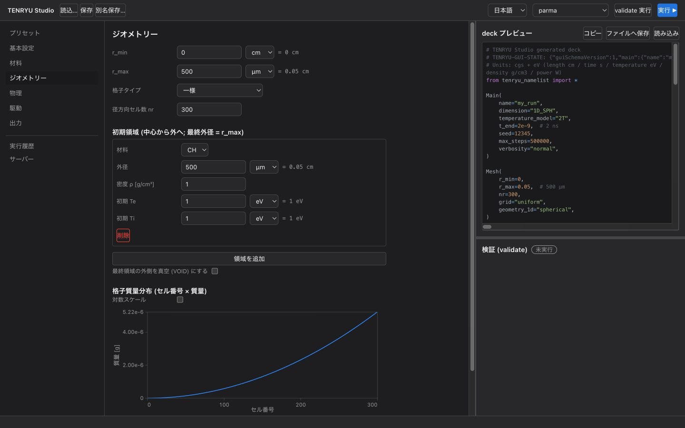
格子
r_max、セル数 nr、格子タイプ (uniform など) を指定します。メッシュは流体とともに動く Lagrangian メッシュです。
領域
内側から順に材料領域を積みます。各領域には材料、外半径 rOuter、密度、初期電子温度 Te、初期イオン温度 Ti を指定します。既定では、最終領域の rOuter は r_max と一致している必要があります。
外側真空 (VOID)
「外側真空」を ON にすると、最終領域の外側が VOID 材料でマスクされます。このとき rOuter < r_max が必要です。伝導・放射は VOID を素通りしない扱いになり、床密度で真空域を充填することによる数値病理を避けられます。
プリプラズマ・コロナ ramp
外側真空が ON のとき、コロナ ramp をさらに有効化できます。最終領域表面から指数減衰する低密度コロナを、スケール長 L、範囲、ρ0、床密度で指定します。
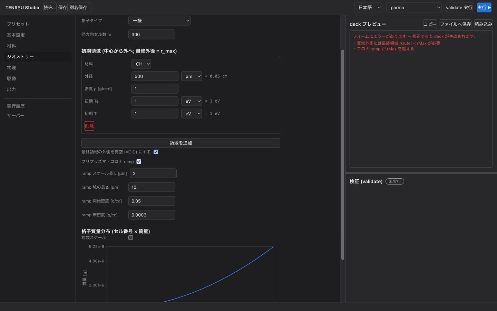
rOuter=r_max のまま外側真空を ON にすると、右ペインは赤字のエラー一覧に切り替わります。rOuter < r_max に修正するとデッキ生成が自動再開されます。7. 物理
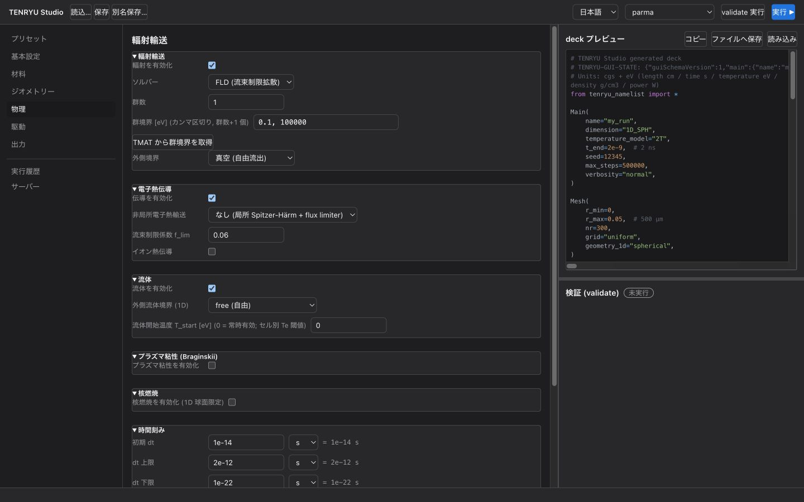
輻射輸送
輻射輸送を有効化し、ソルバーに FLD (flux-limited diffusion、流束制限拡散) を選びます。群数と群境界 [eV] を指定し、1 群なら灰色近似になります。外側境界は真空または Marshak です。Marshak 温度は定数 Tr、または駆動タブの間接照射と連動する折れ線 Tr(t) で与えられます。
電子熱伝導
電子熱伝導を有効にすると、非局所電子熱輸送モデルを選択できます。「なし」は局所 Spitzer–Härm (SH)、「SNB」は非局所モデルです。モデル選択の下にある flux limiter の係数 f_lim は、モデル切替時に SH → 0.06 (較正済みリミッタ)、SNB → 0.5 (安全キャップ) へ自動設定されます。SNB 自身が非局所抑制を担うため、小さい f のままでは SNB の物理を覆い隠します。
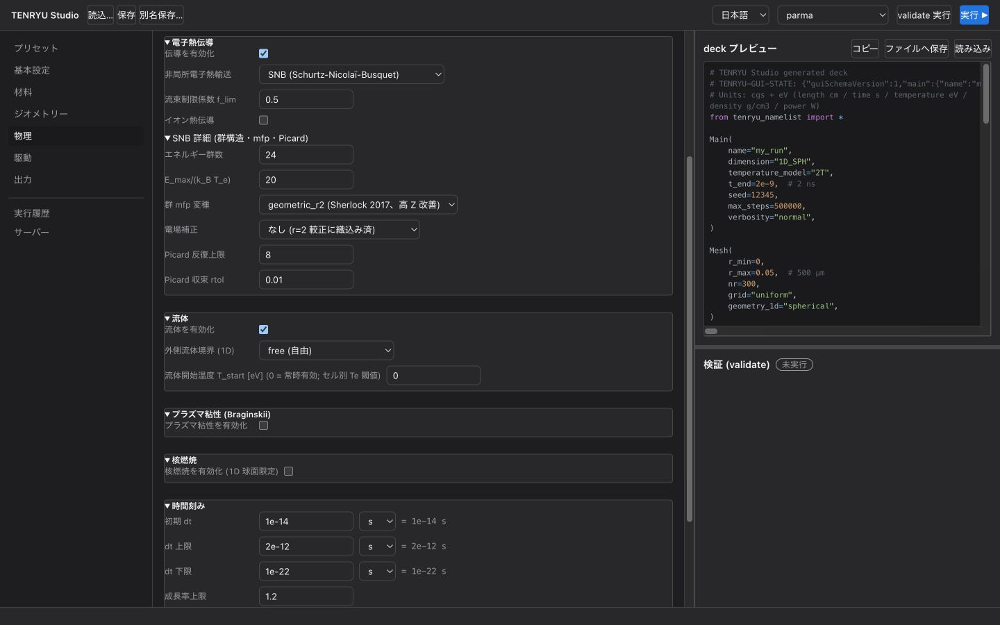
SNB の既定値は、エネルギー群数 24、Emax/(kBTe)=20、群 mfp 変種 geometric_r2 (Sherlock 2017)、電場補正「なし」、Picard 反復上限 8、rtol=0.01 です。r=2 の較正には電場補正が織り込み済みなので、local と併用すると二重計上になります。
- イオン熱伝導: Braginskii のイオン熱伝導を電子の熱伝導の後に解きます（1D・2T のみ。2D や 1T ではフォームのエラー）。有効にすると、イオン熱流束の制限係数
ion_f_lim（既定 1 = イオンの自由流束）を設定できます。 - 流体: 有効化、外側境界 (
free/reflect/pressure)、流体開始温度T_start[eV] (セルの電子温度がこの値に達するまで流体計算をしない。0 = 常時有効) を設定します。 - T_start 未満のセルの扱い:
passive_fill(既定。圧力を持たず隣接セルに追従)、rigid_wall(剛体壁として体積とエネルギーを保持、1D 専用)、cold_equilibrium(1D 専用) から選びます。cold_equilibriumでは流体計算を全セルで行い、電子温度がT_start以下のときだけ EOS を補正して、各材料の参照状態を全圧 P0・体積弾性率 K0 の力学平衡に置きます (T_startを超えると元の表に戻ります)。全材料の TMAT EOS と 2T が必要で、選ぶと電子・イオン交換の比熱がtableになり、材料タブに参照状態の欄が現れます。遷移開始比・密度範囲・逆変換の反復上限は「詳細」で変えられます。 - 電子・イオン交換の比熱:
ideal_gas(既定) またはtable(EOS 表の比熱、1D 専用)。 - プラズマ粘性: 既定は OFF です。
8. 駆動
駆動方式は「なし」「レーザー直接照射」「輻射温度 Tr(t) (間接照射)」「外部圧力 Pext(t)」から選びます。
レーザー直接照射
波長、レイトレース、波形、パワー、パルス長を設定します。1D では単一参照ビームの光学のみを指定し、方向・本数・配分は意味を持たないため表示されません。波形は矩形 (rise/fall 付き)、ガウス、折れ線テーブルから選べます。
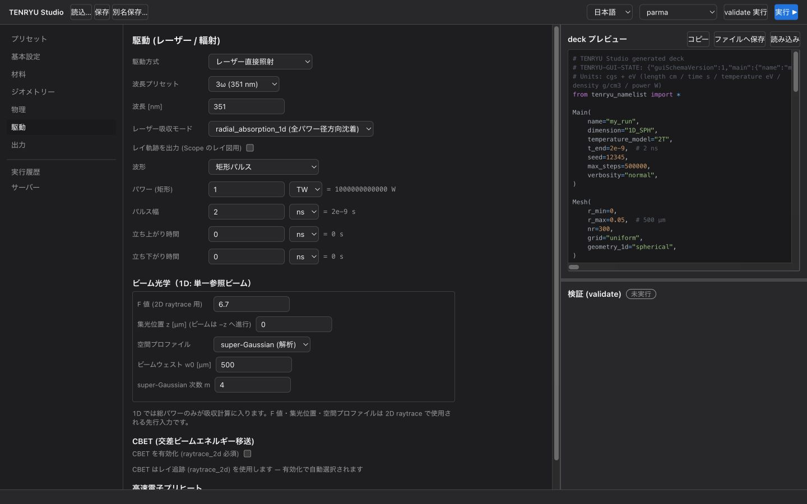
ビーム光学
f 値、スポット w0、スーパーガウス次数を設定します。GXII 検証値は f/3、w0=200 µm、m=4 です。
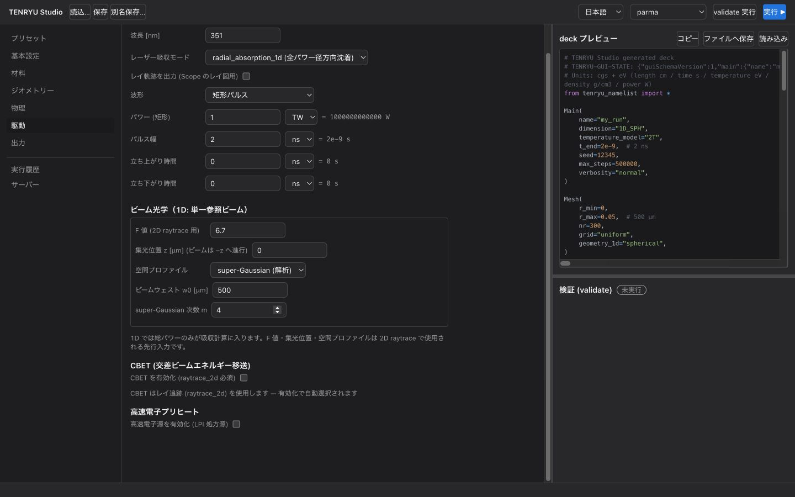
CBET
CBET を有効化すると、ポート配置プリセット (GXII 12 / OMEGA 60 / NIF 192 の理想化配置) と Δλ デチューニングなどが表示されます。多ビーム間エネルギー交換を、単一参照トレースの位相空間再構成で計算する 1D 専用実装です。
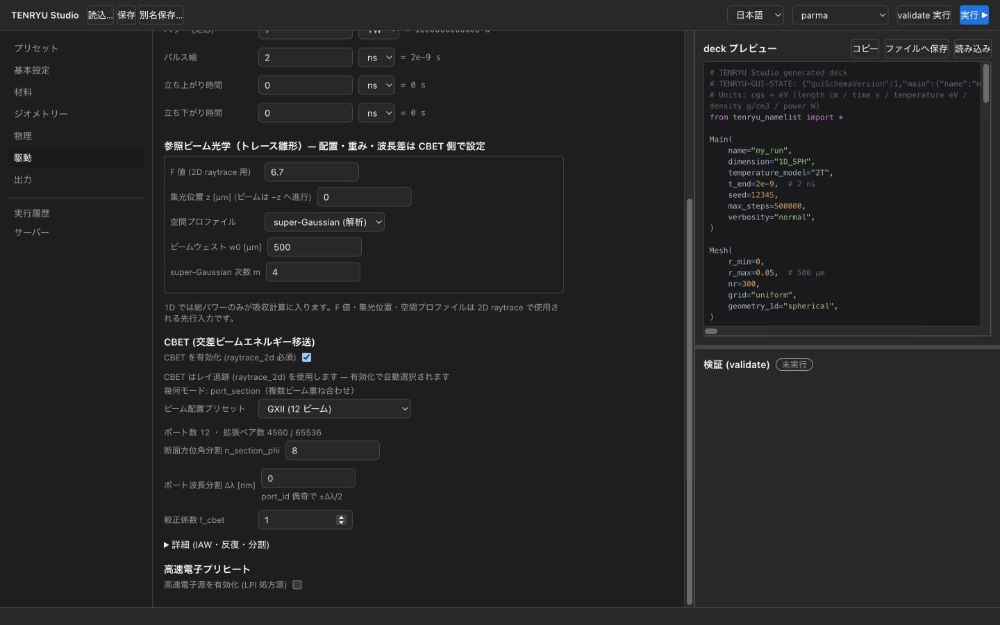
ホット電子
η(t) モデルなどを使って、高速電子の生成・輸送・沈着を付加します。
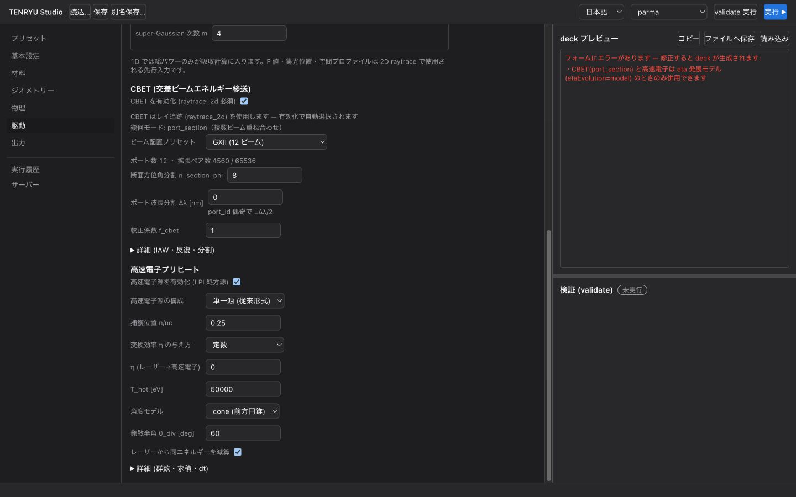
間接照射 Tr(t)
駆動方式で「輻射温度 Tr(t)」を選ぶと、Marshak Tr(t) の波形エディタが使えます。検証済みの波形例は §3 の間接照射プリセットを参照してください。
外部圧力
1D 境界に対する圧力駆動 Pext(t) を指定します。
9. 出力
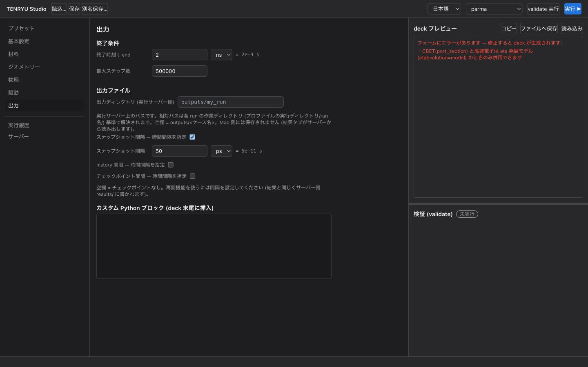
- 出力ディレクトリ: 空欄なら
outputs/<ケース名>です。 - スナップショット間隔:
plot_every_sで指定します。 - 履歴: 時系列の診断量を保存します。
- チェックポイント: 再開用データの出力を設定します。
10. デッキの確認・保存・実行
右ペインには常に最新のデッキが表示されます。「コピー」「ファイルへ保存」「読み込み」を使ってデッキを扱えます。
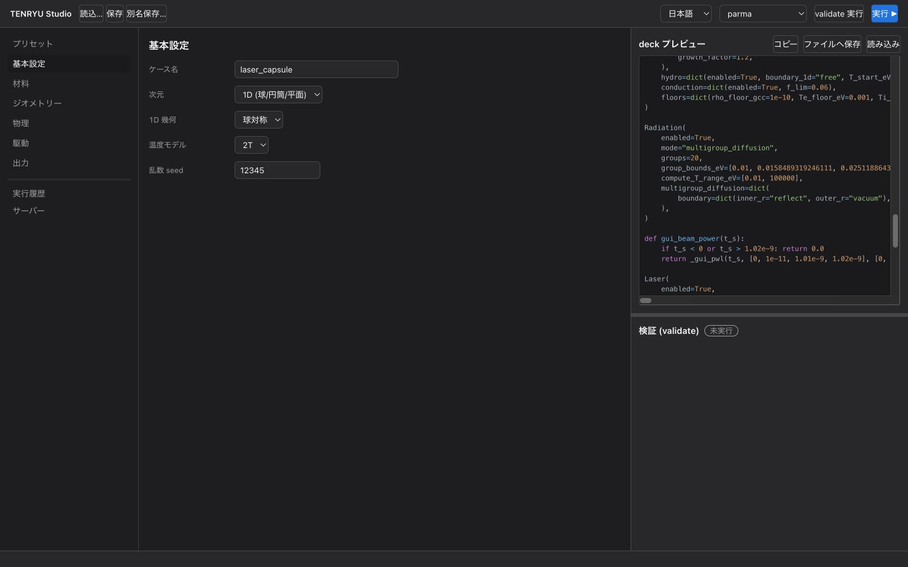
検証パネルの「validate 実行」は、選択サーバー上で dry-run 検証を行います。実行▶は選択サーバーへジョブを投入し、進行状況は「実行履歴」タブで追跡できます。サーバー未設定でも、デッキを保存して手元で次のように実行できます。
./build/tenryu run deck.py11. アシスタント (実験的)
左ナビの「アシスタント」ビューは、LLM による 1D デッキ生成と決定論的な実行診断を提供します。既定では LLM 機能は無効で、環境変数 TENRYU_ASSIST_DISABLE=1 が常に優先される kill switch です。
準備
- Mac 側には python3（Xcode コマンドラインツール付属）と、自分でログインした Claude Code か Codex CLI が必要です。
- Mac に TENRYU を置く必要はありません。「文書とソースの取得元」でサーバープロファイルを選び「サーバーから同期」を押すと、サーバーのチェックアウトから文書・例題・ソースがアプリの設定フォルダに取り寄せられます（未同期なら最初の質問やデッキ生成で自動同期）。アシスタント本体（tools/assist）はアプリに同梱されているので、サーバー側チェックアウトには docs/ と src/ があれば十分です。開発者はローカルのチェックアウトを指定して代わりに使えます。
- 設定欄の「LLM 設定」でプロバイダ（Claude Code / Codex CLI の雛形）とモデル、役割の割当を選び「保存」すると、アプリの設定フォルダ（macOS では ~/Library/Application Support/jp.osaka-u.ile.tenryu-studio/assistant.toml）に書き出され、状態確認が再実行されます。
- Studio が使う設定はアプリの設定フォルダの assistant.toml だけです（未作成なら LLM 機能は無効の既定のまま）。CLI 版 (tools/assist) は ./assistant.toml や ~/.tenryu/assistant.toml も探します（雛形: tools/assist/assistant.example.toml）。プロバイダ CLI (codex / claude) はローカルマシンで認証済みであることが前提です。
- デッキ検証は現在選択中のサーバープロファイルのバイナリで行われます (ssh プロファイルでは tools/assist/tenryu_remote.sh 経由)。ポート・鍵・ホストキー方針はプロファイル設定から自動で引き継がれます。
質問
「質問」欄に TENRYU についての質問を入力して送信すると、ローカルチェックアウトで tools/assist/assist.py ask が実行され、question_answering 役割に設定したプロバイダ（読み取り専用の CLI）が文書とソースを探索して回答します。回答末尾の根拠（path:line）と namelist キーは自動で実在を検査され、確認できなかった項目が表示されます。同じ会話で続けて質問すると前の往復が引き継がれます。作業ディレクトリはアプリの設定フォルダの ask/<stamp>/ です。ヘッダーの「質問チャット」ボタン（⌘J / Ctrl+J）で右側にチャット欄が開き、どの画面からでも質問できる。Enter で送信、Shift+Enter で改行。
デッキ生成
仕様を自然言語で書いて「生成」を押すと、生成 → サーバーでの validate/freeze → lint フィードバックの反復ループが走ります (最大反復 1–10)。モデルが不明点を推測せず質問してきた場合 (UNCERTAIN)、回答欄で答えて再生成できます。受理されたデッキはその場で検証・保存・実行でき、実行は通常の実行履歴に入ります。全 LLM 呼び出しはアプリの設定フォルダの作業ディレクトリ generate/<stamp>/ にある journal.jsonl に記録されます。
Lint と診断
- 検証パネルの「詳細 Lint」は、現在のフォームデッキに対して solver の validate/freeze に加え、メッシュ・ゾーニング系の lint (節点単調性・隣接幅比・autozone 質量比・intent ピン検査) を実行します。
- 実行履歴の終了 run には「診断 (アシスタント)」があり、ダイジェスト (履歴系列の縮約と派生指標)・ゾーニング診断 (アブレート帯の質量形 lint)・ゾーニング昇格案を表示します。サーバー側に python3 (ダイジェストには h5py) と tools/assist を含むチェックアウトが必要です。
12. トラブルシューティング
| 症状 | 原因 | 対処 |
|---|---|---|
| レーザーの吸収がほぼゼロ | コロナ ramp が無効 | §6 の ramp を ON にします。既定値で構いません。 |
| デッキが表示されず、赤字のエラー一覧が出る | フォーム検証エラー | 一覧の各行を修正します。たとえば外側真空が ON のときは rOuter < r_max が必要です。 |
| Marshak 駆動で殻が爆縮しない | 不透明度が薄い (τ<1 で体積加熱)、または foot が長すぎる | κ を実材料相当の数千 cm²/g へ上げ、ramp を早めます。検証済みの間接照射プリセットを参照してください。 |
| ρpeak がプリセット記載より低い | スナップショットの間引き | per-step 履歴で読みます (§9)。 |
実行が t_end 直前で警告 [dt_floor_abort] を出す |
旧版の端点丸め表示 (2026-07-31 修正済み) | 最新版へ更新してください。 |